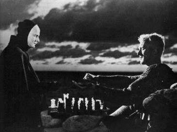

The Seventh Seal, Still (Death and the Knight at Chess)
Ingmar Bergman · 1957 · Film, black and white (frame)
In copyright. Look and learn: shown for study, not for download.
The chess game by the sea and the closing dance of death were the only scenes not shot in or around the Filmstaden studios in Solna; both were filmed at Hovs Hallar, a rocky stretch of beach in north-western Scania. Bengt Ekerot, who plays Death, had directed the Stockholm staging of Bergman's play Wood Painting, from which the film grew. Bergman rewrote the script five times and was given thirty-five days and $150,000; it was the seventeenth film he directed.